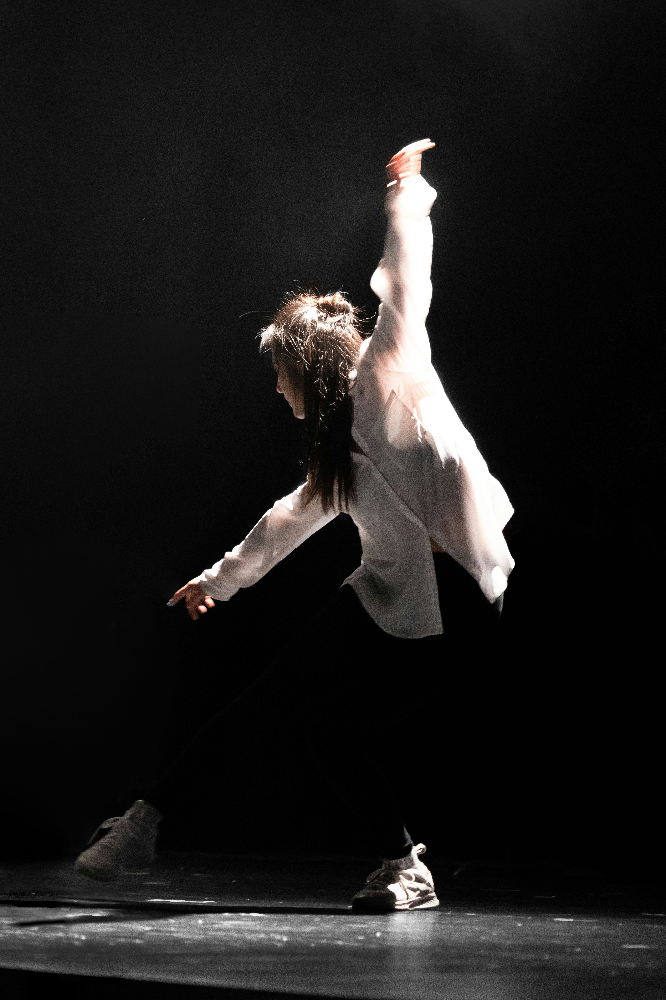
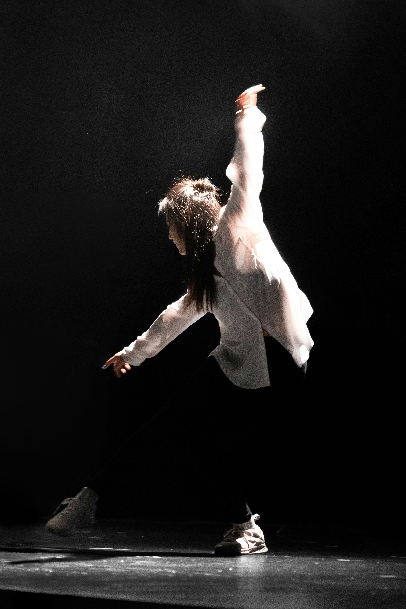
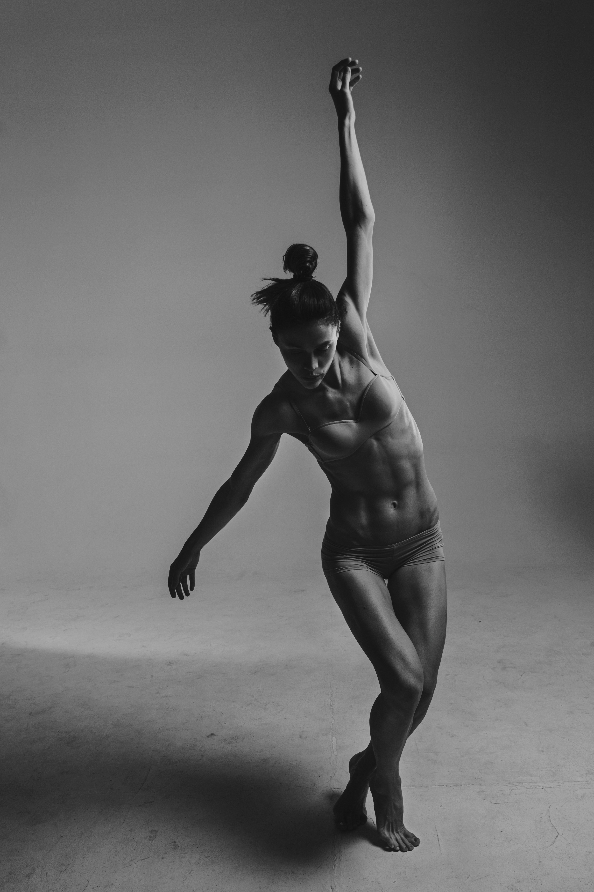
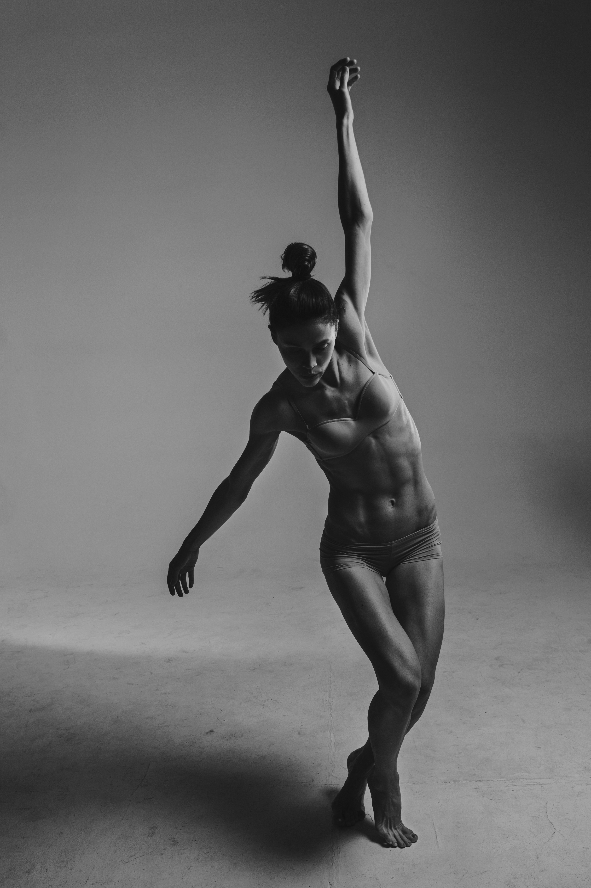

BLANC
dance and more
Meet our cast
 


 

Blanc is a dutch ensemble with dancers from different backgrounds and walks of life, working together on different thought provoking, mind bending artistic projects. They mostly combine contemporary dance pieces with poetry, and play with light and color in their minimalist staging. Dispite their name being 'Blanc', diversity and belonging are important themes featured in their work. Blanc's most important goal is for their spectators to be inspired, and to open their minds and their hearts to different stories and experiences. To create a blank slate, and invite new possibilities. Art can be out of this world.
 Or take a look at
this wonderful article written by
one of the cast members.
Or take a look at
this wonderful article written by
one of the cast members.